Introduction
Ce rapport accompagne le relevé d’audit effectué sur l’application « Adapto ».
L’évaluation pour les applications mobiles consiste à vérifier l’ensemble des critères de la norme européenne d’accessibilité pour les produits et services EN 301 549 (v3.2.1). La méthodologie de test se base sur le Référentiel d’évaluation de l’accessibilité des applications mobiles.
L’audit a été réalisé à l’aide des technologies d’assistance disponibles, des tests de restitution avec le lecteur d’écran du système d’exploitation (TalkBack), ainsi que des tests d’adaptation des contenus en fonction des paramètres d’affichage utilisateurs.
Échantillon
L’audit a été réalisé sur la version 3.37.4 de l’application sous Android 11.
L’audit a porté sur les écrans et parcours suivants :
| Nº écran | Titre de l’écran |
|---|---|
| E01 | Démarrer |
| E02 | Connexion |
| E03 | Mot de passe oublié |
| E04 | Compte |
| E05 | Modification - informations de compte (modification mot de passe) |
| E06 | Prochains voyages |
| E07 | Ajouter un voyage - accueil |
| E08 | Ajouter un voyage (étape 1) |
| E09 | Ajouter un voyage (étape 2) |
| E10 | Ajouter un voyage (étape 3) |
| E11 | Ajouter un voyage (étape 4) |
| E12 | Réservation confirmée |
| E13 | Favoris (liste) |
| E14 | Favoris (Ajouter/Modifier) |
| E15 | Partager |
| E16 | Nous contacter |
Accessibilité des parcours audités
L’application présente un niveau général d’accessibilité moyen.
Le niveau global de conformité au RAAM relevé atteint 47,06 % de conformité sur l’ensemble des écrans audités, avec 52,94% de conformité au niveau simple A (A) et 28,57 % de conformité au niveau double A (AA).
L’application est non conforme.
Conformité RAAM de l’application
| Conforme | Non conforme | |
|---|---|---|
| A | 51,85% | 48,15% |
| AA (légal) | 47,06% | 52,94% |
Note sur le calcul de conformité
La conformité globale est calculée de la manière suivante : C / (C+NC). C est le nombre de critères conformes et NC le nombre de critères non conformes.
C’est ce nombre qui constitue la référence légale. Il représente le taux de conformité de l’échantillon.
Il est normal que le taux de conformité global diffère sensiblement du taux de conformité par écran. En effet, un critère NC (non conforme) sur un écran rend le critère non conforme sur l’ensemble de l’échantillon.
Pour qu’une application soit conforme (100 % des critères applicables sont conformes au niveau AA), il est nécessaire que le taux de conformité par écran atteigne 100 %.
Conformité pour chaque niveau
| Conforme | Non conforme | |
|---|---|---|
| A | 51,85% | 48,15% |
| AA | 28,57 % | 71,43% |
Moyenne par écrans
| Nº écran | Titre d’écran | %C |
|---|---|---|
| E01 | Démarrer | 69,23 |
| E02 | Connexion | 80 |
| E03 | Mot de passe oublié | 80 |
| E04 | Compte | 76,47 |
| E05 | Modification - informations compte | 80,77 |
| E06 | Prochains voyages | 64,71 |
| E07 | Ajouter un voyage - accueil | 63,64 |
| E08 | Ajouter un voyage (étape 1) | 57,14 |
| E09 | Ajouter un voyage (étape 2) | 75 |
| E10 | Ajouter un voyage (étape 3) | 55 |
| E11 | Ajouter un voyage (étape 4) | 46,15 |
| E12 | Réservation confirmée | 92,31 |
| E13 | Favoris (liste) | 78,57 |
| E14 | Favoris (Ajouter/Modifier) | 66,67 |
| E15 | Partager | 85,71 |
| E16 | Nous contacter | 75 |
Moyenne par thématiques
| Thématiques | C |
|---|---|
| Éléments graphiques | 50 % |
| Couleurs | 0 % |
| Multimédia | NA |
| Tableaux | NA |
| Composants interactifs | 40 % |
| Éléments obligatoires | 100 % |
| Structuration | 50 % |
| Présentation | 50 % |
| Formulaires | 50 % |
| Navigation | 33,33 % |
| Consultation | 33,33 % |
| Documentation et fonctionnalités d'accessibilité | NA |
| Outils d'édition | NA |
| Communication en temps réel | NA |
Impacts utilisateurs
Les principales personnes impactées sont les personnes aveugles et celles qui naviguent au clavier. Les problèmes liés aux composants interactifs (intitulé absent ou insuffisamment explicite, rôle manquant, inaccessibilité au clavier) ainsi que l’ordre de navigation qui n’est pas toujours cohérent rendent parfois difficile l’utilisation de l’application par ces utilisateurs.
Note sur le relevé des non-conformités
Ne sont cités dans ce rapport que quelques exemples issus du relevé des non-conformités.
De plus, toutes les occurrences d’une non-conformité ne sont pas listées dans le relevé. Par exemple : pour les composants interactifs dont le rôle n’est pas accessible aux technologies d’assistance, le relevé mentionne quelques occurrences, mais ne les cite pas toutes.
Avis
Des efforts manifestes ont été entrepris pour prendre en compte l’accessibilité. Néanmoins, pour que l’application soit parfaitement utilisable, un certain nombre de points bloquants doivent être corrigés.
Sont listées ci-dessous les non-conformités les plus bloquantes pour les utilisateurs.
- Des composants interactifs ne sont pas compatibles avec les technologies d'assistance. Notamment, certains boutons ne disposent pas du tout de nom ou celui-ci n'est pas explicite. Leur rôle ou leur état (plié/déplié par exemple) n’est pas indiqué.
- Certains composants interactifs sont inaccessibles au clavier (sélection de la date et de l'heure).
- Aucun écran n’est structuré avec des titres.
- Sur certains écrans (prochains voyages et réservation), l’ordre de navigation n’est pas cohérent.
- L’orientation est bloquée en mode portrait.
Ce sont donc ces points qui devront nécessiter une attention toute particulière et qui demanderont le plus d’efforts.
Annexe technique
Éléments graphiques
Recommandation
Identifier les éléments graphiques de décoration pour qu’ils soient ignorés par les technologies d’assistance. Donner à chaque élément graphique porteur d’information une alternative textuelle pertinente et une description détaillée si nécessaire. Remplacer les éléments graphiques textes par du texte stylé lorsque c’est possible.
Éléments graphiques porteurs d’information
Un élément graphique est considéré comme porteur d’information lorsqu’il contient une information indispensable à la compréhension du contenu auquel il est associé. Il est indispensable que ces informations soient restituées, par exemple aux utilisateurs aveugles avec un lecteur d’écran.
Constats dans l’application
Certains éléments graphiques porteurs d’information ne disposent pas d'alternative. Les informations véhiculées ne sont donc pas restituées aux personnes aveugles qui utilisent un lecteur d’écran.
Par exemple, le pictogramme qui signifie « passager » ou « personne » ou la pastille rouge qui indique la présence de réservations.
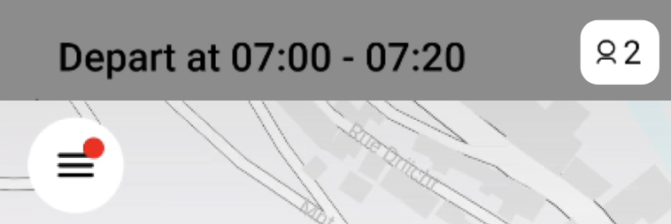Couleurs
Recommandation
Ne pas donner l’information uniquement par la couleur et utiliser des contrastes de couleurs suffisamment élevés pour les textes et les composants d’interface et les éléments graphiques.
Contrastes des textes
Plusieurs couleurs présentent un rapport de contraste insuffisant, ce qui peut poser problème aux grands malvoyants et aux déficients visuels qui ont des difficultés à percevoir les couleurs ou les contrastes.
Les textes doivent avoir un rapport de contraste de 4.5:1.
Constats dans l’application
Les contrastes sont conformes sur la majorité des écrans de l’application. On trouve néanmoins une erreur de contraste (ratio de 1,8) sur la page « Démarrer » sur les textes « Brought to you by Le gouvernement du Grand-Duché de Luxembourg… » et « Powered by via ».

Contraste des composants d’interface
Les composants d’interface, les illustrations porteuses d’information ou encore les mises en couleurs porteuses d’information doivent être suffisamment contrastés pour être perçus par les utilisateurs ayant des troubles de perception des couleurs. Par exemple, une icône porteuse d’information devra avoir un rapport de contraste avec la couleur de fond de 3. De même, pour un champ de saisie de formulaire, dont la zone active est matérialisée par sa bordure, alors la couleur de cette bordure devra avoir un rapport de contraste de 3 avec la couleur de fond de l’écran.
Constats dans l’application
On trouve quelques composants d’interface insuffisamment contrastés dans l’application. Par exemple : le bouton pour ajouter une photo de profil, le bouton à bascule pour sélectionner un transport régulier ou encore le bouton pour effacer le contenu d’un champ de saisie.
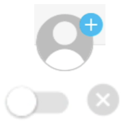Information par la couleur
Lorsqu’une information est donnée par la couleur, il faut qu’elle soit également véhiculée par une autre méthode, par exemple par un texte qui donne la même information, pour être perçue par les utilisateurs qui perçoivent mal ou pas du tout les couleurs comme les utilisateurs aveugles ou daltoniens.
Il faut également donner un indice visuel autre que la couleur, afin de répondre aux besoins des personnes déficientes visuelles (les daltoniens par exemple). Il peut s’agir d’un symbole, d’une texture, de chiffres.
Constats dans l’application
Sur l’écran de réservation d’un voyage, la distinction entre l’adresse de départ et celle d’arrivée se fait par la couleur (rouge pour le départ, noir pour l'arrivée).
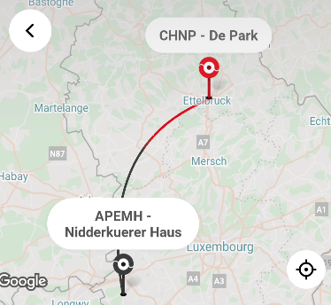Composants interactifs
Recommandation :
Donner si nécessaire à chaque composant interactif une alternative pertinente. Rendre possible le contrôle de chaque composant interactif au moins par le clavier et la souris et s’assurer de leur compatibilité avec les technologies d’assistance. Identifier les messages de statut lorsque c’est nécessaire.
Rôle inapproprié ou non défini
Pour les utilisateurs aveugles et grands malvoyants qui utilisent un lecteur d’écran, ce manque de distinction claire sur la nature des composants interactifs peut poser de graves problèmes.
En effet, le rôle du composant, annoncé par le lecteur d’écran TalkBack, fournit une information contextuelle importante pour l’utilisateur qui peut déduire certaines actions possibles et s’attendre à certains événements.
Constats dans l’application
On trouve de nombreux composants interactifs dont le rôle n'est pas défini. Par exemple, sur la page « Détails du profil », les différents composants interactifs n’indiquent pas au lecteur d’écran que ce sont des boutons.
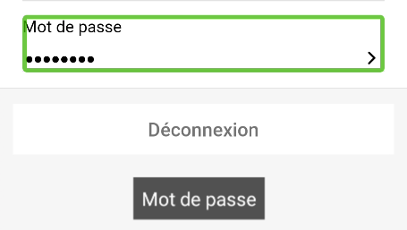Intitulé absent ou non pertinent
Pour chaque composant interactif, deux éléments sont à prendre en compte :
- Le nom accessible doit être pertinent ;
- Le nom visible doit être contenu dans le nom accessible.
Le nom accessible est le nom effectivement restitué par les technologies d’assistance comme le lecteur d’écran. Ce nom accessible est différent du nom visible dans les cas où l’application emploie certaines propriétés (comme les propriétés de nommage d’accessibilité des plateformes, dont le contenu n’est pas visible, mais est restitué par les lecteurs d’écran).
Constats dans l’application
On trouve quelques composants interactifs sans intitulé dans l’application. Par exemple, le bouton pour supprimer la photo de profil n’a pas de libellé. Une personne aveugle ne saura donc pas à quoi sert le bouton.
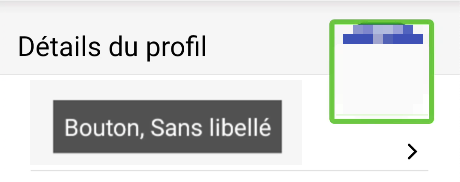Clavier et dispositifs de pointage
Tous les éléments interactifs doivent être utilisables (atteignables et activables) par différents systèmes de pointage, par exemple : au toucher, avec un clavier externe (raccordement d’un clavier externe bluetooth ou USB et navigation avec les touches tabulation et flèches de direction), à la voix (VoiceControl sur iOS, Voice Access sur Android).
Constats dans l’application
Certains composants interactifs sont inaccessibles au clavier. C'est le cas par exemple de la flèche qui permet de naviguer entre les favoris définis ou de la sélection de la date ou de l’heure.
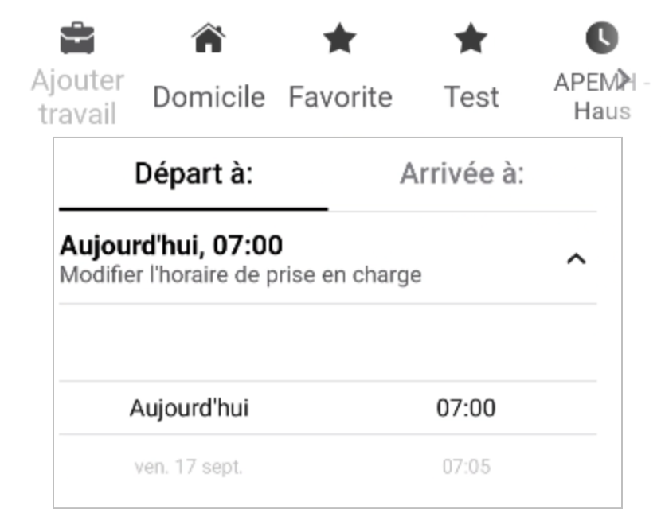Changement de contexte
Un changement de contexte est une situation où un utilisateur ne peut pas anticiper le fonctionnement d’une fonctionnalité lorsque celle-ci ouvre une nouvelle application, valide un formulaire ou ajoute ou modifie du contenu dans l’écran par exemple.
Cela concerne plus spécifiquement les fonctionnalités qui se lancent sans que l’utilisateur puisse les anticiper comme, par exemple, la soumission automatique d’un champ de formulaire sur la sélection d’un item ou lorsque l’utilisateur quitte un champ de saisie.
Constats dans l’application
Certains composants interactifs initient un changement de contexte sans que celui-ci soit explicite. Par exemple, le bouton « Cliquer pour zoomer sur ma localisation » modifie et remplit le champ de départ avec les informations de géolocalisation sans que la personne soit prévenue en amont. Un exemple d’intitulé plus pertinent serait « Utiliser ma localisation comme adresse de départ ».
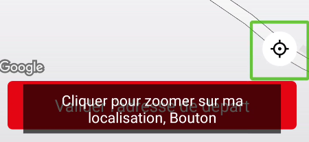Structuration de l’information
Recommandation
Utiliser des titres, des listes.
Titres
Le titrage des contenus est une étape importante dans leur structuration. Cela répond à deux besoins :
- identifier rapidement un contenu recherché ;
- naviguer rapidement dans le contenu en se déplaçant de titre en titre.
Un titrage correct fournit à l’utilisateur d’un lecteur d’écran un plan du document et lui permet de naviguer de titre en titre pour se déplacer plus rapidement dans le contenu.
Constats dans l’application
Les écrans de l’application ne sont pas structurés avec des titres. L’impact est particulièrement important sur l’écran qui liste les réservations lorsqu’il y en a plusieurs. Les dates devraient être structurées avec des titres pour permettre de naviguer rapidement entre elles.
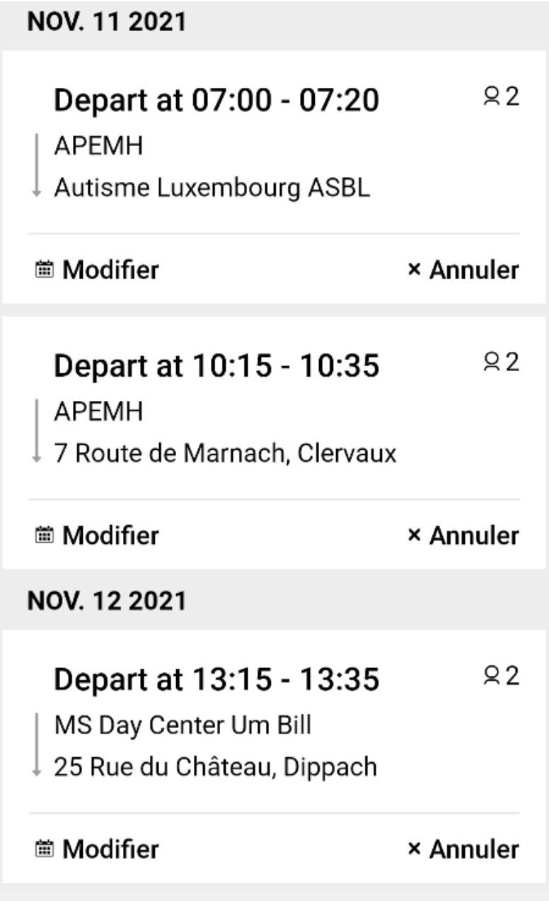Présentation de l’information
Recommandation
Vérifier la prise en charge des paramètres de taille de police et l’effet de l’agrandissement des tailles des caractères sur la lisibilité. S’assurer que les composants sont correctement identifiables. S’assurer que l’information n’est pas donnée uniquement par la forme ou la position d’un élément.
Contenus visibles non accessibles
Certains textes des écrans visibles ne sont pas accessibles aux technologies d’assistance.
Constats dans l’application
Sur l’écran d’accueil, les textes visibles « Brought to you by Le gouvernement du Grand-Duché de Luxembourg… » et « Powered by via » ne sont pas restitués aux lecteurs d’écran.
Agrandissement des textes
Certaines personnes déficientes visuelles, également des personnes ayant des difficultés de lecture comme les personnes dyslexiques, ont besoin d’adapter la taille du texte à l’écran.
L’agrandissement des caractères ne doit pas provoquer de perte d’informations. À 200%, le contenu doit rester lisible et compréhensible, toutes les informations doivent rester présentes.
L’utilisateur spécifie la taille des caractères au niveau de la plateforme, en utilisant les paramètres de présentation système.
Constats dans l’application
Si dans l’ensemble, l’application gère bien l’agrandissement des caractères, sur certains écrans, des contenus sont tronqués.
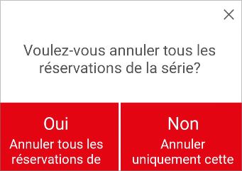Formulaires
Recommandation :
Associer pour chaque formulaire chacun de ses champs à son étiquette, grouper les champs dans des blocs d’informations de même nature, donner à chaque bouton un intitulé explicite. Vérifier la présence d’aide à la saisie, s’assurer que le contrôle de saisie est accessible et que l’utilisateur peut contrôler les données à caractère financier, juridique ou personnel.
Étiquettes reliées aux champs
Les champs de formulaires doivent tous posséder des étiquettes correctement reliées.
Une étiquette de champ est un texte situé à proximité du champ de formulaire qui permet de connaître la nature, le type ou le format des informations attendues.
De cette manière, lorsqu’un utilisateur entre dans le champ de saisie avec un lecteur d’écran, le lecteur d’écran lit le contenu de l’étiquette. L’utilisateur comprend alors ce qu’il doit saisir.
Sans cela, même si une étiquette est présente visuellement, l’utilisateur entendra « champ de saisie vide » en entrant dans le champ et ne saura donc pas quoi saisir.
Constats dans l’application
Sur certains champs, comme le champ « Adresse » sur l’écran d’ajout d’un favori, les étiquettes ne sont pas correctement reliées.
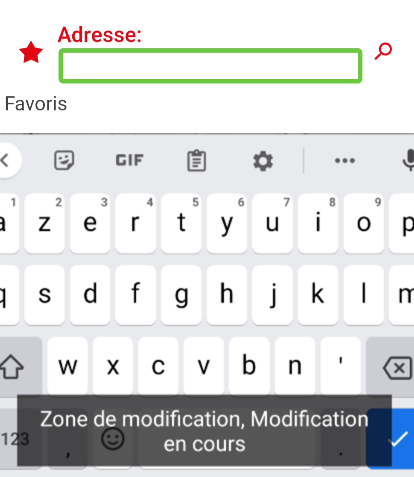Étiquettes visibles
Les étiquettes de formulaire doivent rester visibles et ne pas disparaître à la saisie de contenu dans le champ. En effet, la disparition de l’étiquette peut perturber certaines personnes handicapées cognitives (troubles de la mémoire par exemple) et leur compliquer la saisie.
Constats dans l’application
Sur l’écran d’ajout d’une adresse de favori, l'étiquette du champ de formulaire « Donner un nom » disparaît lorsqu’on commence à saisir du texte.
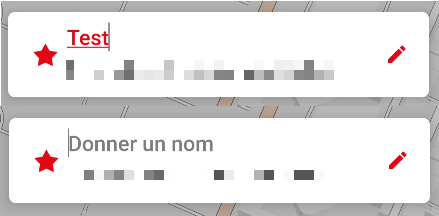Contrôle de saisie et aide à la saisie
Tous les champs obligatoires doivent être identifiés préalablement à toute validation de l’utilisateur.
Pour les champs qui attendent un format de saisie particulier pour être validés, ce format doit être spécifié à l’utilisateur par un passage de texte visible à proximité du champ. De plus, si l’utilisateur commet une erreur sur ce champ, alors le message d’erreur doit présenter un exemple réel de saisie.
Enfin, les messages d’erreur de saisie des champs de formulaire doivent être liés correctement aux champs erronés.
Constats dans l’application
Certains champs obligatoires ne sont pas identifiés. C’est le cas du champ « Donner un nom » par exemple.
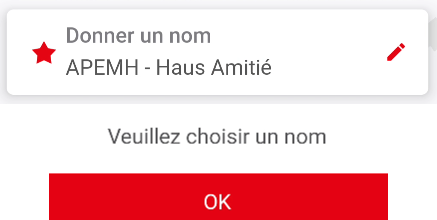Les champs obligatoires qui attendent un format de saisie particulier (e-mail, numéro de téléphone) ne l’indiquent pas au préalable (ex. « E-mail (ex. nom@domaine.lu) ») et ne proposent pas d’exemple de saisie réel.
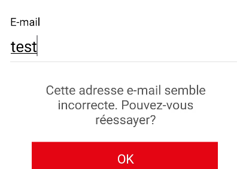Navigation
Recommandation :
S’assurer que l’ordre de tabulation est cohérent et que l’écran ne comporte pas de piège au clavier. S’assurer que les raccourcis clavier qui utilisent une seule touche sont contrôlables par l’utilisateur.
Ordre de tabulation
La navigation dans les contenus peut être considérablement compliquée pour les personnes aveugles ou les personnes handicapées motrices qui naviguent au clavier si l’ordre de tabulation n’est pas cohérent.
L’ordre de tabulation ne suit pas forcément l’ordre de lecture de l’écran, mais il doit être cohérent en fonction de la nature des contenus et des fonctionnalités.
Constats dans l’application
La navigation au clavier est dans l'ensemble cohérente. Sur certains écrans néanmoins, l’ordre devrait être revu. On navigue également parfois sur des éléments non interactifs, comme sur l’écran des favoris.
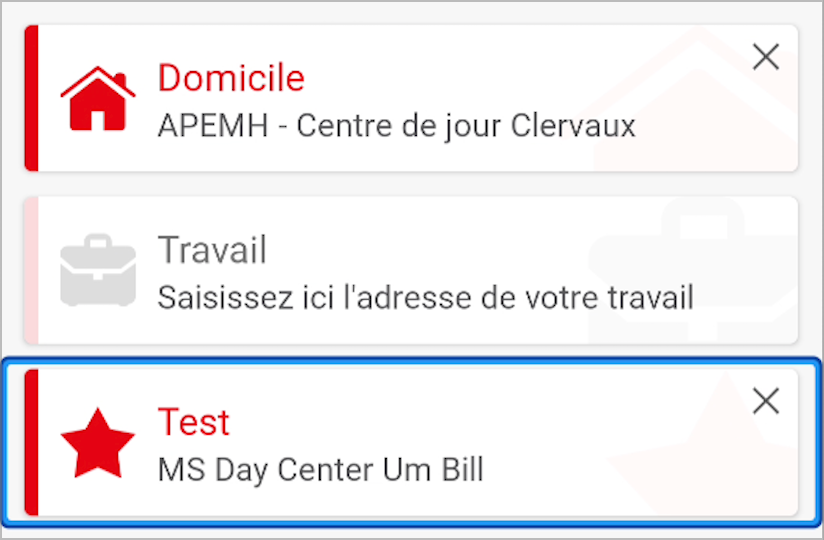Ordre de restitution
L’ordre d’accès aux composants d’interface par le lecteur d’écran peut être différent de l’ordre de navigation à l’aide d’un clavier externe (sans utilisation d’un clavier), bien que parfois, les deux partagent les mêmes comportements.
Constats dans l’application
L'ordre de restitution est globalement pertinent sur les différents écrans, même si on trouve encore des erreurs à certains endroits. L'écran « Prochains voyages » constitue une des exceptions notables. La navigation au lecteur d’écran y est particulièrement instable sur cet écran. Si l’utilisateur est inactif pendant un certain temps, le focus est repositionné sur l’onglet « Liste » sans prévenir. La navigation dans le calendrier est également particulièrement laborieuse.
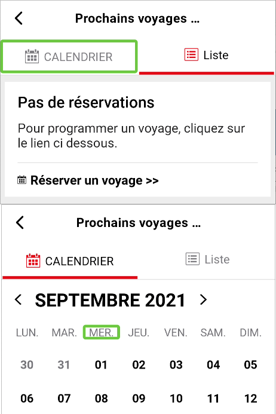Consultation
Recommandation
Vérifier que l’utilisateur a le contrôle des procédés de rafraîchissement, des changements brusques de luminosité et des contenus en mouvement ou clignotants. Ne pas faire dépendre l’accomplissement d’une tâche d’une limite de temps sauf si elle est essentielle et s’assurer que les données saisies sont récupérées après une interruption de session authentifiée. Proposer des versions accessibles ou rendre accessibles les documents en téléchargement. S’assurer que la consultation n’est pas dépendante de l’orientation de l’écran. Toujours proposer un geste simple en alternative d’un geste complexe permettant de réaliser une action.
Consultation des contenus indépendante de l’orientation
Certaines personnes handicapées motrices peuvent utiliser des périphériques dont elles ne peuvent pas contrôler l’orientation. Par exemple les personnes qui utilisent des contacteurs pour interagir avec le périphérique de consultation. D’autres, comme les personnes déficientes visuelles peuvent avoir besoin de forcer un mode d’affichage (paysage par exemple) pour pouvoir bénéficier des fonctionnalités d’agrandissement des caractères.
Il est donc nécessaire que les applications :
- ne bloquent pas l’orientation sur un mode portrait ou paysage ;
- s’assurent que les contenus sont consultables dans les deux modes d’affichage.
Constats dans l’application
L’application est bloquée en mode portrait et ne peut jamais être consultée en mode paysage.